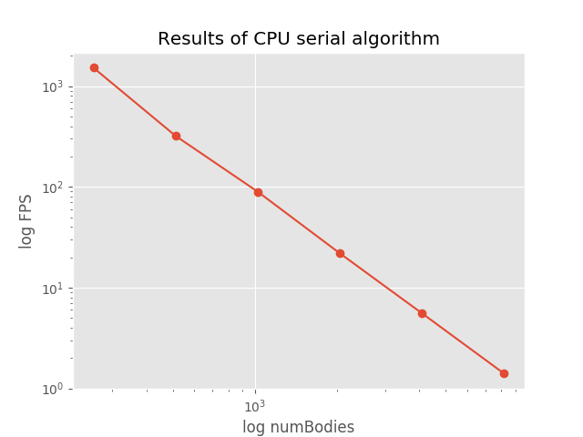
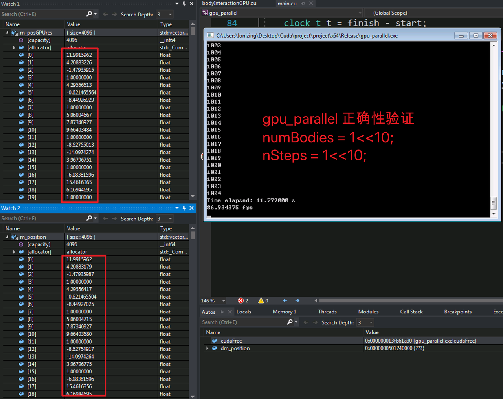
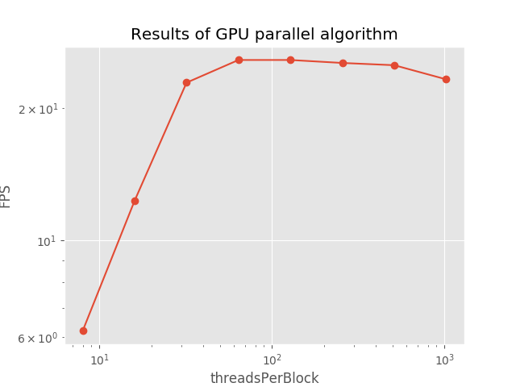
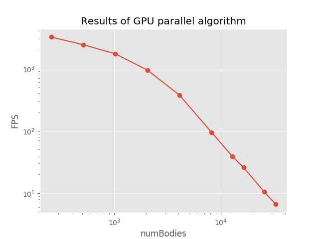
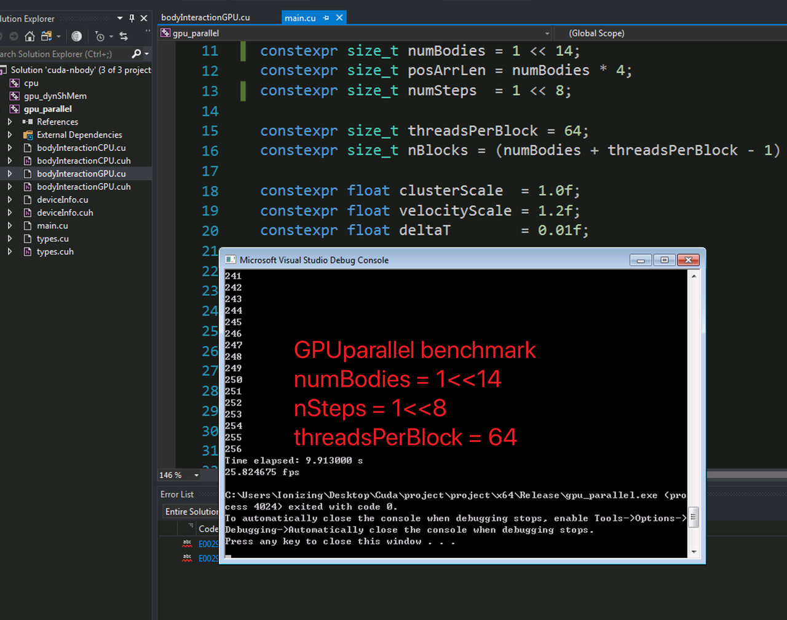
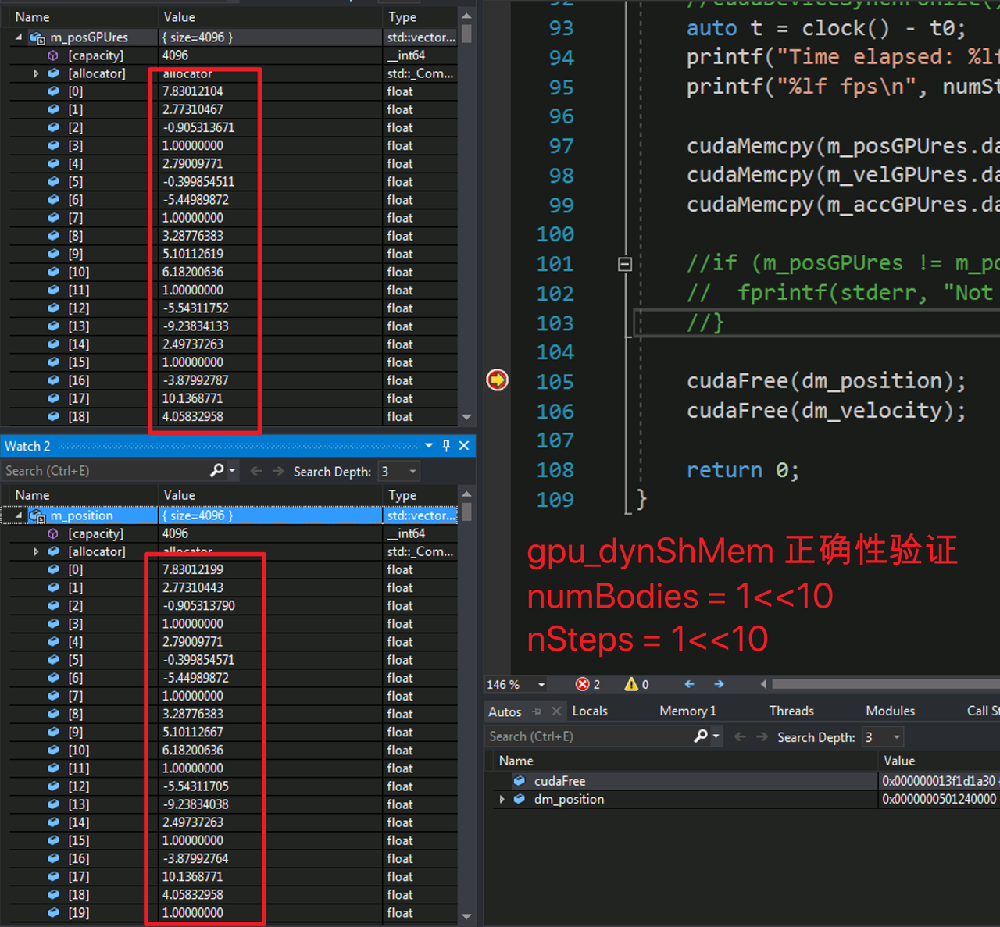
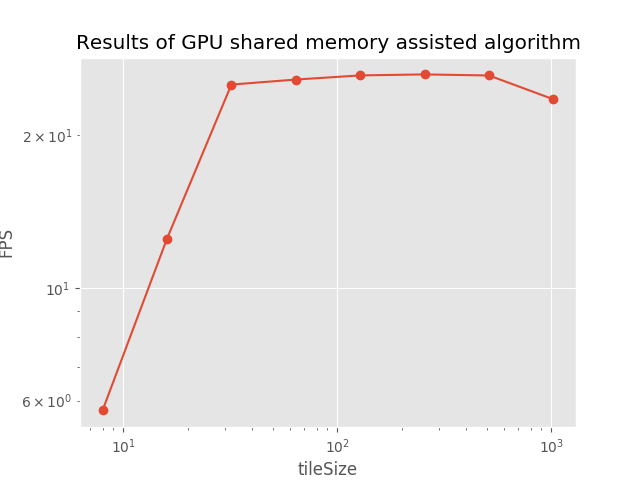
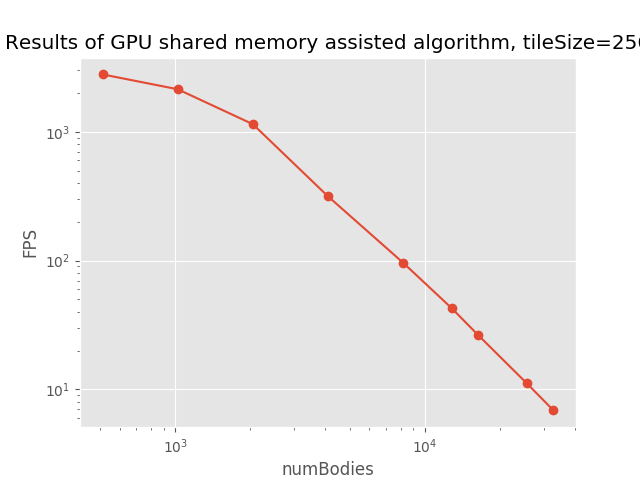
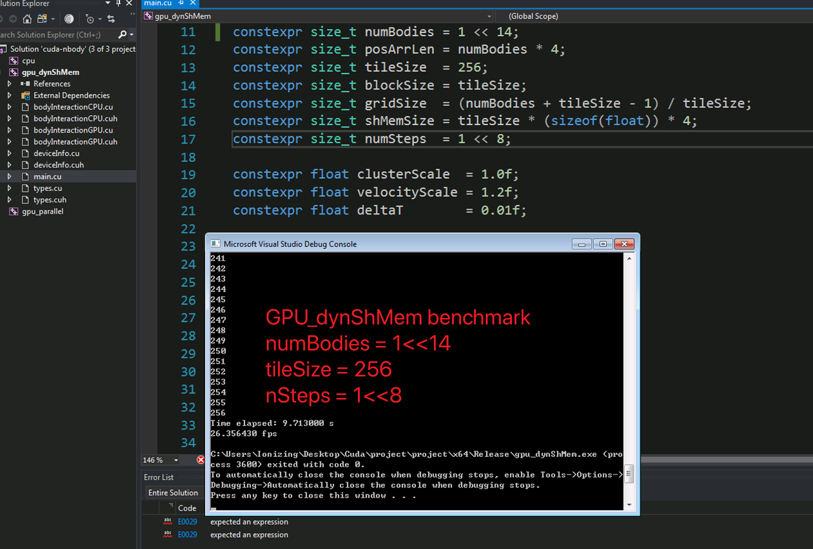

使用 CUDA 为 N 体模拟加速
简介
本文是研二上学期 CUDA 课程 Project 作业的简单总结。
在物理学中， 多体问题一般是指在已知初始位置、速度和质量的多个物体在经典力学框架下进行演化的 预测问题。 在多体系统中，每个物体都受到其他物体的相互作用而使其自身的运动产生响应的影响。在 天体力学中， \(N\) 体系统的模拟是典型的多体问题，物体之间的相互作用力是万有引力，每个物体受到剩余 其他物体的万有引力的合力而产生加速度，进而影响自身的速度和位置。本项目即来研究天体力学中 N 体 系统演化的 GPU 并行加速问题。
环境简介
硬件环境
| 机器型号 | ThinkPad Edge E540 |
| CPU | Intel Core i5 4210M 2.6GHz |
| RAM | 8 GB |
| GPU | NVIDIA GT840M 2GB GRAM |
GPU 详细信息如下：
| Key | Value |
|---|---|
| Device name | GeForce 840M |
| totalGlobalMem | 2048 MBytes |
| sharedMemPerBlock | 49152 |
| regsPerBlock | 65536 |
| warpSize | 32 |
| memPitch | 2147483647 |
| maxThreadsPerBlock | 1024 |
| maxThreadsDim[0 - 2] | 1024 1024 64 |
| totalConstMem | 65536 |
| major.minor | 5.0 |
| clockRate | 1124000 |
| textureAlignment | 512 |
| deviceOverlap | 1 |
| multiProcessorCount | 3 |
软件环境
| OS | Windows 7 64-bit |
| CUDA | 10.1 |
| IDE | Visual Studio 2019 |
原型程序
相关假设
本项目假设一下条件：
- 忽略每个物体的大小，即每个物体看成质点；
- 忽略物体之间的相互碰撞；
- 每个物体的状态仅由位置 (\(q\)) 和速度 (\(\dot{q}\)) 来描述；
- 受单精度浮点数精度和时间尺度限制，万有引力常数取为 1 （正常值取为 6.67E-11）；
数据结构说明
为提高访存效率，本文使用序列化存储，即将物体状态信息的结构体展开并依次放入 一维线性数组中，如
m_position = [
x1, y1, z1, m1,
x2, y2, z3, m2,
...
...
xn, yn, zn, mn
];
m_velocity = [
vx1, vy1, vz1, 0,
vx2, vy2, vz2, 0,
...
...
vxn, vyn, vzn, 0
// zero for padding
];
m_position 中按顺序依次存放了每个物体的 x 、 y 、 z 和质量 m ，如
上面代码清单中所示。 m_velocity 在排布数据时为了对齐和之后访问方便，在每个
物体的速度变量之后多放置一个空变量，使每次访问时的偏移量都是 4 的倍数，简化
访存逻辑；之后如果有需要用到所有物体加速度的数组时，它的数据结构同上。
核心算法
计算每个物体所受万有引力产生的加速度
每个物体受的万有引力是其他物体对其万有引力作用的合力
\begin{align} a_i &={} - \sum_{j\ne i} G \dfrac{m_j}{||r_{ij}||^2} \cdot \dfrac{r_{ij}}{||r_{ij}||} \\ &={} \sum_{j\ne i} 1 \cdot \dfrac{m_j \cdot (q_i - q_j)}{||q_i - q_j||^3} \end{align}
公式中 \(r_{ij}\) 是一个矢量，表示物体 \(j\) 到物体 \(i\) 的距离矢量，其模长即是距离的长度；
由于物体间的力为引力，因此公式前面出现了负号；然而在实现这个公式过程中需要注意在分母中出现了 \(q_i - q_j\) ，
我们已经假设忽略物体的形状大小和碰撞问题，那么在模拟过程中就有可能出现两个物体的距离过小使得在根据上式计算加速的
过程中有零除的风险，为了解决这个问题，一个通常的做法是在计算 \(||r_{ij}||\) 时加上一个大于零的 softenSqr 软化因子，
来避免出现零除错误。这个过程的时间复杂度是 \(\mathcal{O} (N)\) ，其中 \(N\) 是系统中物体数。
当已经知道如何计算每个物体的加速度，求所有物体的加速度就变得更加 trivial ，只需遍历所有的物体，重复上面的步骤即可。 显然，这个过程的时间复杂度为 \(\mathcal{O} (N^2)\) ，空间复杂度为 \(\mathcal{O}(N)\) 。
相关代码如下:
float3 calcSingleAccel(float4 posMassA, float4 posMassB, float3 accel) {
float3 dr;
dr.x = posMassA.x - posMassB.x;
dr.y = posMassA.y - posMassB.y;
dr.z = posMassA.z - posMassB.z;
float mass_j = posMassB.w;
float distSqr = dot(dr, dr) + softenSqr;
float invDist = 1.0f / sqrtf(distSqr);
float invDist3 = invDist * invDist * invDist;
float Gmdr3 = mass_j * invDist3;
accel.x += dr.x * Gmdr3;
accel.y += dr.y * Gmdr3;
accel.z += dr.z * Gmdr3;
return accel;
}
void calcTotalAccel(float3 m_position[],
float3 m_accel[],
const size_t numBodies) {
for(size_t i=0; i!=numBodies; ++i) {
float3 accel = {0.0f, 0.0f, 0.0f};
for(size_t j=0; j!=numBodies; ++j) {
if (i == j) continue; // avoid self-interaction;
accel = calcSingleAccel(m_position[i],
m_position[j],
accel);
}
m_accel[i] = accel;
}
}
对每个物体的状态进行演化
已知每个物体的加速度，那么每个物体的状态演化过程满足
\begin{align} v_i &={} \int_{t_0}^{t_1} a_i dt \\ q_i &={} \int_{t_0}^{t_1} v_i dt \end{align}
显然，我们需要先对 \(v_i\) 进行演化，每个时间间隔内 \(v_i\) 的增量为加速度和时间
间隔的乘积 \(a_i \cdot dt\) 。由于忽略了物体形状大小和碰撞，系统的机械能守恒，在
模拟中为了模拟机械能损耗，在对速度演化后，使它经历一个阻尼过程，即演化后的速度乘
以一个阻尼因子 damp ，本文中 damp 统一取为 0.95 。
相关代码如下
void propergate(float4 m_position[],
float3 m_velocity[],
float3 m_accel[],
const size_t numBodies,
const float deltaT) {
calcTotalAccel(m_position, m_accel, numBodies);
for (size_t i=0; i!=numBodies; ++i) {
float3 vel = m_velocity[i];
float3 acc = m_accel[i];
float4 pos = m_position[i];
vel.x += acc.x * deltaT;
vel.y += acc.y * deltaT;
vel.z += acc.z * deltaT;
vel.x *= damp;
vel.y *= damp;
vel.z *= damp;
pos.x += vel.x * deltaT;
pos.y += vel.y * deltaT;
pos.z += vel.z * deltaT;
m_position[i] = pos;
m_velocity[i] = vel;
}
}
总体而言，这个算法的时间复杂度为 \(\mathcal{O}(N^2)\) ，空间复杂度为 \(\mathcal{O}(N)\) 。
运行结果
为方便评估运行性能，本文统一使用 Release 版本程序，让程序演化 512 步（若每一步演 化的时间过长，可减少演化总步数来节省评估时间），计算出每秒演化的步数 （FPS） ， 通过比较 FPS 来反映程序的运行效率。
| numBodies | FPS |
|---|---|
| 256 | 1523.8 |
| 512 | 321.0 |
| 1024 | 89.6 |
| 2048 | 21.9 |
| 4096 | 5.56 |
| 8192 | 1.4 |
当物体数量 \(N\) 多于 213 = 8192 时， CPU 版本的程序每一步运行时间过长，因此不 再继续测试。

从图中可以明显看出，串行版本程序的运行效率是二次方递减的（斜率为 2 ），这相当符 合 \(\mathcal{O}(N^2)\) 的时间复杂度特征。
优化过程
在上一节中本文已经实现了串行版本的 N 体问题模拟程序，因其具有 \(\mathcal{O}(N^2)\) 的时间复杂度，当模拟物体的数量增加时，计算演化所需的时间呈二 次方增加，这个增长速度显然不能使我们满意。
优化思路
分析上一节中串行版本程序，可以发现性能热点集中于计算所有物体的加速度上，并且它的 计算有以下特点：
- 在同一时刻，计算每个物体的加速度仅与上一时刻所有物体的位置有关，与其他物体的速 度无关；
- 在同一时刻，计算每个物体的加速度并不会改变其他任何变量；
- 在同一时刻，计算物体所受合力并不影响其他物体合力的计算。
这三个特点，尤其是最后一个特点可以让我们很自然地联想到用并行方法处理每个物体的加 速度，由于计算单个物体的加速度并不影响计算其他物体的加速度，就有了第一种优化方法。
线程并行加速
本文为每个物体分配一个线程，每个线程仅涉及读取所有物体的位置信息，而在写入加速信 息时只写入该物体的加速度信息，因此不存在竞争，这使得此过程可以很轻松地被并行化， 从而利用空间换时间，使时间复杂度从 \(\mathcal{O}(N^2)\) 降到 \(\mathcal{O}(N)\) ，而空间复杂度维持在 \(\mathcal{O}(N)\) 。
对于每个物体状态进行演化的并行化更简单：
- 每个物体的状态演化仅受其自身加速的和自身速度影响。
因此在演化系统状态时，我们为每个物体分配一个线程，这个线程只涉及读取物体的加速 度、速度和位置，只对该物体的速度和位置变量进行写入，因此不存在数据竞争现象。
需要注意的是，由于每个线程计算加速度的耗时可能并不相同，因此我们需要在状态演化 完成后对所有线程进行同步，避免有的线程过快地读取到未演化完成的其他物体的额位置 信息。
有了以上思路，优化后的线程并行代码很容易得到：
__global__ void propergateSingleGPU(float* posMass,
float* vels,
const float deltaT,
const size_t numBodies) {
size_t ithread = threadIdx.x + blockDim.x * blockIdx.x;
const size_t ibody = ithread * 4;
if (ithread < numBodies) {
float3 F = { 0.0f, 0.0f, 0.0f };
for (size_t j = 0; j != numBodies; ++j) {
const size_t jbody = j * 4;
float3 dr;
dr.x = posMass[ibody + 0] - posMass[jbody + 0];
dr.y = posMass[ibody + 1] - posMass[jbody + 1];
dr.z = posMass[ibody + 2] - posMass[jbody + 2];
#define dot(a, b) (a.x * b.x + a.y * b.y + a.z * b.z)
float distSqr = dot(dr, dr) + softenSqr;
#undef dot
float invDist = 1.0f / sqrtf(distSqr);
float invDist3 = invDist * invDist * invDist;
F.x += dr.x * invDist3 * posMass[ibody + 3];
F.y += dr.y * invDist3 * posMass[ibody + 3];
F.z += dr.z * invDist3 * posMass[ibody + 3];
}
vels[ibody + 0] += deltaT * F.x; vels[ibody + 0] *= damp; // evolve velocity here
vels[ibody + 1] += deltaT * F.y; vels[ibody + 1] *= damp;
vels[ibody + 2] += deltaT * F.z; vels[ibody + 2] *= damp;
}
}
这里笔者将加速度与速度的演化合并在同一个函数中，避免了单独分配一个储存加速度的数 组，节省了空间；同时也避免了对加速度的写入和读取，节省了时间。
__global__ void integratePositionGPU(float* posMass,
float* vels,
const float deltaT,
const size_t numBodies) {
const size_t ithread = threadIdx.x + blockDim.x * blockIdx.x;
if (ithread < numBodies) {
posMass[ithread * 4 + 0] += vels[ithread * 4 + 0] * deltaT;
posMass[ithread * 4 + 1] += vels[ithread * 4 + 1] * deltaT;
posMass[ithread * 4 + 2] += vels[ithread * 4 + 2] * deltaT;
}
}
-
正确性验证
通过在主函数中设置断点，并将 GPU 上演化后的物体状态信息传回内存，与之前 CPU 串行 版本程序的结果进行比较，发现两者完全一致，因此这个程序的正确性是可以得到保证。对 比截图如下：

-
运行结果
- 固定
numBodies = 1 << 14，对每个块分到的线程数threadsPerBlock进行扫描
threadsPerBlock FPS 8 6.2 16 12.3 32 22.9 64 25.8 128 25.8 256 25.4 512 25.1 1024 23.3 
从上图中，我们可以很明显看出，当
threadsPerBlock = 64时能最大化发挥 GPU 每个 块的计算能力，尽管在deviceInfo中每个块最多可以分配1024个线程，但每个块的 寄存器数量是固定的，因此当对块分配过多线程，每个线程分配到的寄存器数量会降低，反 而影响运算效率。- 固定
threadsPerBlock = 64，对模拟物体数量numBodies进行扫描，由于在numBodies取值较小时运行时间较短，本文倾向于计时准确性存疑，故此处数据仅供参 考
numBodies FPS 256 3210.0 512 2419.0 1024 1729.6 2048 946.9 4096 375.3 8192 94.9 12800 39.1 16384 25.8 25600 10.44 32876 6.6 
从
numBodies = 4096开始， FPS 的变化趋势已经大致和模拟物体数量呈负二次方速率 递减，故可以认为当模拟物体数量numBodies为 4096 时，本机的显卡已经最大化发挥 了它的性能（在当前算法优化程度和编译参数下）。对比串行版本模拟 8192 个物体只有 1.4 FPS 的效率，线程并行加速后的程序模拟 8192 个物体的效率能达到 94.9 FPS ，加速 比达到 67.8 ，效率陡然提升了近两个数量级，由此可见本项目 N 体模拟是一个十分适合 并行加速的问题，且不需要过多修改代码就能带来相当大的性能收益。
- 固定
块内共享显存辅助的线程并行加速
在图形显示卡中，可以存放数据的存储器有流处理器的缓存、块内的共享显存和显存，它们 的访问效率依次降低，考虑到流处理器的缓存过小，且无法人为精确控制对它的读写行为 （由编译器决定），而显存虽空间足够大，但访问效率不高，因此考虑利用块内的共享显存 尝试实现进一步的加速效果。
在上节中，计算量最大的部分是计算每个物体的加速度，这个过程实质上是在计算一个相互 作用矩阵 \(A\) ，矩阵元 \(A_{ij}\) 表示第 \(i\) 个物体与第 \(j\) 个物体的万有引 力作用，求每个物体受到的合力时对 \(A\) 每行或每列求和即可，由此我们可以想到将 \(A\) 进行分块：
- 将所有物体分为多个
tile，每个tile含有tileSize个物体，每个物体分配一 个线程； - 每个
tile使用共享显存，这段共享显存储存了这个tile内物体的位置信息； - 在计算加速度前需要对块内的线程进行同步，确保块内的线程都已经把各自的位置信息写 入了这块共享内存；
- 计算二体相互作用的过程与之间的算法没有本质区别；
- 在对该
tile计算完成后需要再次对块内的线程进程同步，确保下次各个线程写入位置 到共享内存时不会存在竞争现象； - 分块计算时每个线程并不能立即得到其计算物体的最终加速度（需要其他块内的计算结
果），因此需要分配一个全局的显存负责暂存每个物体加速度的中间值，每个
tile计 算完成后将所得加速度的值累加到这个全局数组上； - 最后当所有
tile都计算完成时需要对显卡设备上所有的线程进行全局同步（在主函数 内完成），确保不会出现数据竞争现象。
笔者使用的显卡每个块具有共享内存 48 KB ，最多可以分配
49152 / 4 / sizeof(float) = 1536 个物体，然而每个块最多可以分配 1024 个线程，
故在调用时仅考虑每个块分配的线程数即可。
修改后的代码如下：
__device__ void
tileCalAccsGPU(float mPos_i[4],
float accel[4]) {
extern __shared__ float sh_mPos[];
for (size_t i = 0; i < blockDim.x; ++i) {
calcSingleAccGPU(mPos_i, &sh_mPos[4 * i], accel);
}
}
由于在迪奥戈这个函数前各个线程已经把自身对应的 mPos 写入了 sh_mPos 内，此处
对 sh_mPos 遍历不会产生无效访问。
__global__ void
calcTotAccsGPU(float* mPos,
float* mAcc,
const size_t numBodies,
const size_t tileSize) {
extern __shared__ float sh_mPos[];
float myPos[4];
float accel[4] = { 0.0f, 0.0f, 0.0f, 0.0f };
size_t ibody = threadIdx.x + blockDim.x * blockIdx.x;
myPos[0] = mPos[ibody * 4 + 0];
myPos[1] = mPos[ibody * 4 + 1];
myPos[2] = mPos[ibody * 4 + 2];
myPos[3] = mPos[ibody * 4 + 3];
for (size_t i = 0, tile = 0; i < numBodies; i += tileSize, ++tile) {
const size_t idx = tile * blockDim.x + threadIdx.x;
const size_t ithread = threadIdx.x;
sh_mPos[ithread * 4 + 0] = mPos[idx * 4 + 0];
sh_mPos[ithread * 4 + 1] = mPos[idx * 4 + 1];
sh_mPos[ithread * 4 + 2] = mPos[idx * 4 + 2];
sh_mPos[ithread * 4 + 3] = mPos[idx * 4 + 3];
__syncthreads();
tileCalAccsGPU(myPos, accel);
__syncthreads();
}
// apply acceleration results
mAcc[ibody * 4 + 0] = accel[0];
mAcc[ibody * 4 + 1] = accel[1];
mAcc[ibody * 4 + 2] = accel[2];
}
上面代码中两处 __syncthreads() 即对应了块内线程同步的时刻，保证每个线程在写入
sh_mPos 时和在计算加速度过程中读取 sh_mPos 时不会存在数据竞争。
-
运行结果
在正确性方面，同样使用设置断点和与 CPU 串行版本比较结果的方法来进行验证，验证结果表 明该方法与 CPU 版本结果一致。

该测试依旧固定
numBodies = 16384，对每个块分到的 线程数进行扫描，得到结果如下：tileSize FPS 8 5.74 16 12.51 32 25.19 64 25.77 128 26.26 256 26.38 512 26.25 1024 23.56 
固定
tileSize = 256, 扫描numBodies，结果如下：numBodies FPS 512 2790.19 1024 2140.02 2048 1145.73 4096 315.47 8192 96.20 12800 42.80 16384 26.34 25600 11.17 32768 6.87 
对比使用线程并行的版本，使用共享显存加速的程序在达到显卡负载峰值后对计算效率的提 升十分有限——仅有个位数的帧数提升。

结果总结
本项目以 N 体模拟为题探究了 CUDA 对其的加速效果，通过实验发现，线程并行对这个问 题有巨大的性能提升，加速比可达 67.8 ，且 N 体中的 N 越大， CUDA 加速效果越明显。 在使用线程并行加速的基础上，本人还试图使用共享显存进一步加速，但结果表明这一尝试 并未获得期望的性能提升，本人倾向于是因为笔者太菜，没有组织好相关代码，未能充分发 挥显卡的性能。
一点私货
除了上面提到的算法方面的优化，还有其他的优化方法：
- 在编译选项中加入
--use_fast_math，可以试线程并行版本的程序运行效率直接 x2 ，对使用共享显存的线程并行程序加速效果反而没那么夸张，运行效率只能 x1.6 左右； - 对访存进行优化，比如把需要频繁访问的数据放在栈上进行访问，而不是频繁从堆中访问；
- 使用只读数据缓存，；
- 切换计算能力；
- 当有信心保证指针所指的空间不存在重叠时，对只读参数使用
const float* __restrict__参数； - 编译优化层级选择
-O3，在不改变代码的情况下最大程度榨取显卡性能。
评论
Comments powered by Disqus